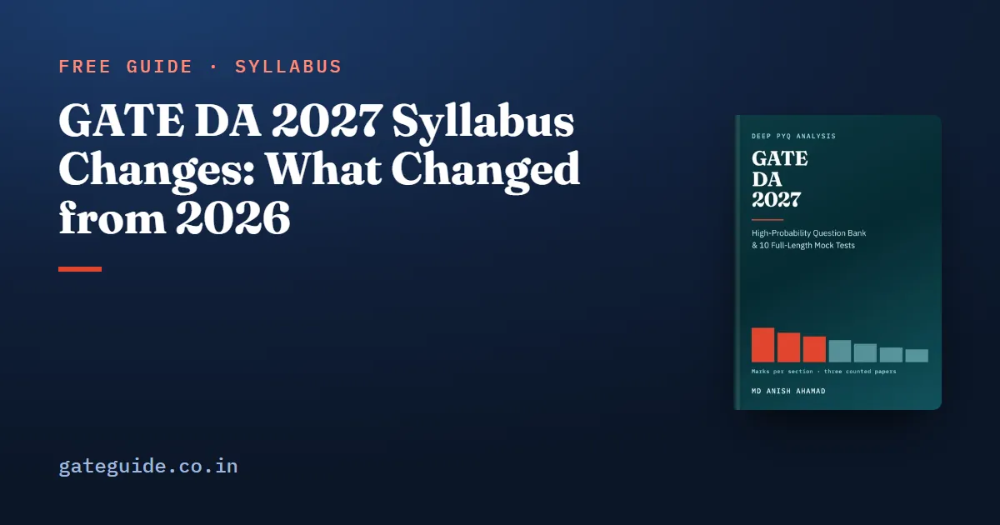

GATE DA 2027 Syllabus Changes: What Changed from 2026

The GATE DA 2027 syllabus did not change a single examinable word from 2026. A program compared the two official PDFs phrase by phrase and word by word and found no phrase added, none removed and none reworded. This guide explains how that comparison works, lists the presentation changes it did find, and shows what an unchanged syllabus means for how you read the three past papers.
In this guide
Key takeaways
- Both documents name 132 phrases across seven sections. Added: 0. Removed: 0. Reworded: 0.
- The only differences are labels: numbered sections, a new page header, and no "(i)" or "(ii)" before Supervised and Unsupervised Learning.
- The 2024 and 2025 syllabi name the same 132 phrases too, so all three DA papers were set on the text you will sit.
- No counted question in any of the three papers fell outside the 2027 syllabus. Nothing needs to be struck out.
- Every zero in the record is a real zero, but a zero over three papers still predicts nothing for 2027.
- Every big swing between papers happened on an unchanged syllabus, so plan on each section's range.
What "changed" means, and how it was checked
A syllabus change is a difference in what can be examined. A phrase is one item of the syllabus, the text between its own commas, semicolons, colons and full stops. A label is text that organises the page, such as a section number, without naming anything examinable.
The GATE DA 2027 book did not read the two documents and judge them. It ran a program on both official PDFs and compared them three ways:
- Phrase by phrase. Each section is split into phrases, and the 2026 and 2027 lists are aligned after folding only case and spacing. A change of one word or one letter would show as a reworded phrase.
- Token by token. Every word and punctuation mark is compared. This finds changes a phrase split cannot see, such as a removed list marker.
- Whole-document vocabulary. Any word in one document and nowhere in the other is listed.
Worked example: how a section becomes phrases
Section 3 of the 2027 syllabus is one sentence. Split it on its own commas and full stop and you get six phrases:
| # | Phrase |
|---|---|
| 1 | Functions of a single variable |
| 2 | limit |
| 3 | continuity and differentiability |
| 4 | Taylor series |
| 5 | maxima and minima |
| 6 | optimization involving a single variable |
The 2026 Section 3 gives the same six, in the same order, with the same spelling. Had 2027 written "limits" instead of "limit", step 1 would have flagged phrase 2 as reworded.
Remember: A change list that says "nothing changed" is the one most worth checking yourself. The two documents are one page each.
The result, section by section
| Section | Phrases 2026 | Phrases 2027 | Added | Removed | Reworded | Label changes |
|---|---|---|---|---|---|---|
| 1. Probability and Statistics | 35 | 35 | 0 | 0 | 0 | 0 |
| 2. Linear Algebra | 18 | 18 | 0 | 0 | 0 | 0 |
| 3. Calculus and Optimization | 6 | 6 | 0 | 0 | 0 | 0 |
| 4. Programming, Data Structures and Algorithms | 18 | 18 | 0 | 0 | 0 | 0 |
| 5. Database Management and Warehousing | 19 | 19 | 0 | 0 | 0 | 0 |
| 6. Machine Learning | 26 | 26 | 0 | 0 | 0 | 2 |
| 7. Search, logic, reasoning under uncertainty | 10 | 10 | 0 | 0 | 0 | 0 |
| Total | 132 | 132 | 0 | 0 | 0 | 2 |
The vocabulary check found no word in 2026 missing from 2027, and none in 2027 missing from 2026.
The presentation changes it did find
These change how the page looks, not what it names.
- Page header. 2026 named IIT Guwahati as organising institute. 2027 names IIT Madras.
- Section labels. 2026 opened each paragraph with the section name and a colon. 2027 numbers them "Section 1:" to "Section 7:" and puts each name on its own line.
- Machine Learning sub-labels. 2026 printed "(i) Supervised Learning:" and "(ii) Unsupervised Learning:". 2027 drops the "(i)" and "(ii)" and sets the two as separate paragraphs.
That is the whole list. The new numbering is handy, and this guide uses it.
Trap: Do not mistake a reformatted page for a new syllabus. Topic lists that look different on screen can still be word for word the same.
The earlier syllabi say the same thing
The book also compared the official 2024 (IISc Bengaluru) and 2025 (IIT Roorkee) DA syllabi with 2026. All four documents, 2024 to 2027, name the same 132 phrases in the same order.
The 2025 text is identical to 2026 down to the punctuation. The 2024 text differs by one mark: a hyphen where 2025 and 2026 print a dash, in the reasoning-under-uncertainty line of Section 7.
So every DA paper ever set was written against the words you will sit. That is unusual, and useful.
What an unchanged syllabus means for you
Every zero is a real zero
Four named topic groups drew no counted question in any paper: confidence intervals with the z, t and chi-squared tests, LU decomposition, linked lists, and functions of a single variable on their own. With an unchanged syllabus, that zero cannot be explained as "it was not on the syllabus then". The 2026 setters had those words and did not use them.
It still says nothing about 2027. Three papers are too few for an absence to be a prediction, and all four topics are short. Read each one.
Every swing happened on the same text
Between 2025 and 2026, Calculus fell from 11 marks to 2 and Database rose from 11 to 18. Nothing in the syllabus explains either. Each was the setters' choice from the same menu, and the 2027 panel at IIT Madras makes its own choice. The guide to the organising institute explains why no DA paper yet carries its name.
Nothing needs to be skipped
When a syllabus deletes material, old papers carry questions you should strike out. DA has none. Two questions sit at the edge of the syllabus, a topological ordering in 2024 (Q51) and a double geometric series in 2026 (Q35), but each rests on a named skill: graph traversal and limits.
In one line: An unchanged syllabus makes all three papers fully usable, and makes the range of each section the honest number to plan on.
General Aptitude did not change either
The 2027 General Aptitude syllabus, common to every GATE paper, adds no examinable word to 2026. It numbers its four headings and adds a few full stops and commas. The General Aptitude preparation guide covers what it asks.
What to do now
- Keep studying from any 2026 syllabus-based plan. Nothing in it is out of date.
- Use all three DA papers as practice. Hold two back as timed papers.
- Add a short reading of the never-asked named topics.
- Confirm the syllabus on the official portal before the exam; the exam dates guide has the schedule.
This guide covers what changed. The GATE DA 2027 book prints the full comparison, its method, and every section's counted topic table built on this unchanged text.
Quick revision
- 2026 to 2027: 0 phrases added, 0 removed, 0 reworded, across 132.
- Changes are labels only: numbered sections, new header, no "(i)" and "(ii)".
- The 2024 and 2025 syllabi name the same 132 phrases.
- No counted question fell outside the 2027 syllabus.
- Never-asked groups are real zeros, but not predictions.
- Calculus 11 to 2 and Database 11 to 18 happened on the same text.
- General Aptitude syllabus: no examinable change either.
Frequently asked questions
Has the GATE DA syllabus changed for 2027?
Not in any examinable word. The official 2026 and 2027 DA syllabus documents were compared phrase by phrase and word by word, and no phrase was added, removed or reworded across all 132. The changes are presentation only, such as numbered sections and a new page header from IIT Madras.
What are the label changes in the GATE DA 2027 syllabus?
Two kinds. The 2027 document numbers its seven sections as Section 1 to Section 7 and sets each name on its own line, where 2026 opened each paragraph with the name and a colon. And in Machine Learning it drops the (i) and (ii) in front of Supervised Learning and Unsupervised Learning.
Are GATE DA 2024 and 2025 papers still useful for 2027?
Yes, fully. The 2024 and 2025 syllabi name the same 132 phrases as 2027, word for word, and no question in any of the three papers fell outside the 2027 syllabus. There is no deleted material to strike out, so every question in those papers is relevant practice.
Did the GATE 2027 General Aptitude syllabus change?
No word of examinable content changed. Compared with the 2026 document, the 2027 General Aptitude syllabus numbers its four headings and adds a few full stops and commas, but adds, removes and rewords nothing. It remains common to every GATE paper and carried 15 marks in each DA paper.
Sources
- GATE 2027 official website (IIT Madras)
- GATE 2027 DA syllabus PDF (IIT Madras)
- GATE 2026 official website (IIT Guwahati)
Dates, fees and the syllabus are set by the GATE 2027 organising institute and can change. Always confirm at gate2027.iitm.ac.in.